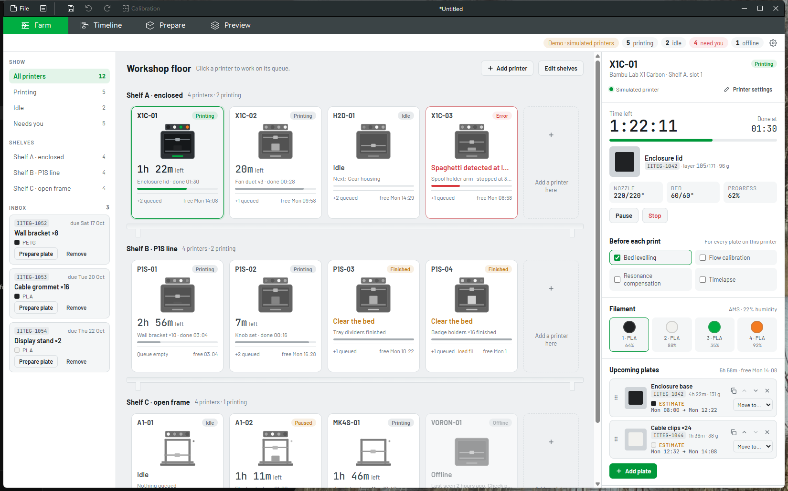
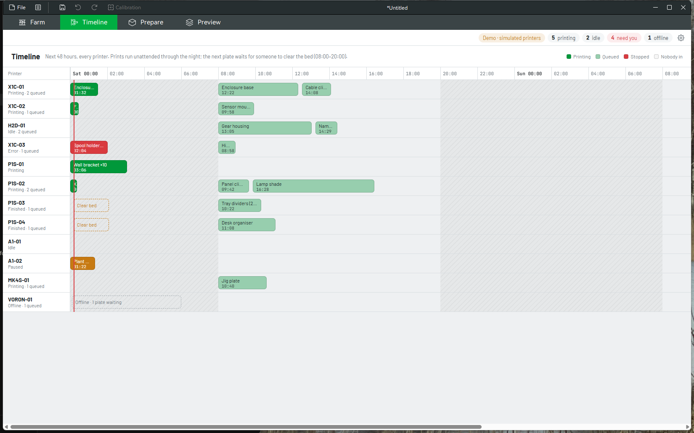

Prepare in a familiar slicer
Use OrcaSlicer’s Prepare and Preview, with its printer profiles and settings. Sync loaded filaments from the selected printer.
About the slicerLOCAL PRINT FARM SOFTWARE
Prepare parts, organise queues and keep track of your printers. OPF brings your farm and OrcaSlicer together in one desktop application.
Download for Windows

Farm & TimelineActual application screens, shown with simulated printers.
On your networkLocal printer connections. No OPF cloud account.
Farm and slicer togetherFarm, Timeline, Prepare and Preview.
Open by designFree software, built on OrcaSlicer. AGPL-3.0.
THE DAILY WORK
Keep the next job close to the printer it belongs to. OPF handles the queue while you stay in control of what starts.
Use OrcaSlicer’s Prepare and Preview, with its printer profiles and settings. Sync loaded filaments from the selected printer.
About the slicerSend one plate or all plates. Reorder, duplicate or move queued work. Open a queued project to make a change and send it back.
See progress, filament and printer state in one place. When a print finishes, clear the bed and start the next plate.
Timeline / the next 48 hours
PLAN THE WORK AHEAD
The timeline shows current prints and queued plates across your farm. Set working hours so the next plate waits for someone to clear the bed.
PRINTER COMPATIBILITY
OPF connects to supported printers over your own network. Support is still expanding, so here is what has been checked.
Bambu printers require LAN mode and Developer Mode for start/stop controls.
| Printer family | Current support |
|---|---|
| Bambu Lab A1 / A1 mini | In daily useLive status, filament and print controls |
| Anycubic Kobra 3 Max | Owner testedReal printing confirmed on our farm |
| Bambu Lab P1 / X1 | Less testedSame LAN protocol; further hardware testing needed |
| Other Anycubic Kobra 3 / S1 | ImplementedIndividual models still need validation |
| Klipper / Moonraker, PrusaLink | PlannedNot connected in the current release |
Simulated printers are included for trying OPF without starting a real print.
GET STARTED
The Windows installer includes OPF Slicer and the farm. Install it, add your printers, then prepare and queue your first plate.
Version 0.2.3
Download installerWindows 10 / 11 · 64-bit · Free
Farm updates arrive inside OPF. Native slicer updates use the full installer. Windows code signing is not available yet.
DEVELOPMENT
Planned work from the project board. Have a printer or a workflow we should support? Tell us on GitHub ↗
BUILT AT IITEG
OPF is developed by IITEG, an engineering company in Latvia. We built it to organise our own 3D printing work and are sharing it as free, open-source software.
Prepare and Preview are based on OrcaSlicer. OPF keeps its own settings, so it can sit alongside an existing OrcaSlicer installation.